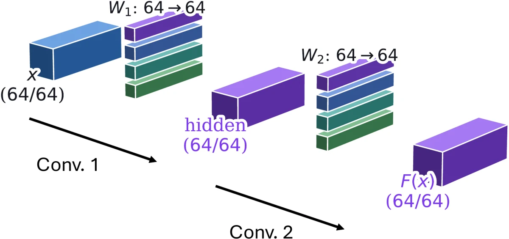
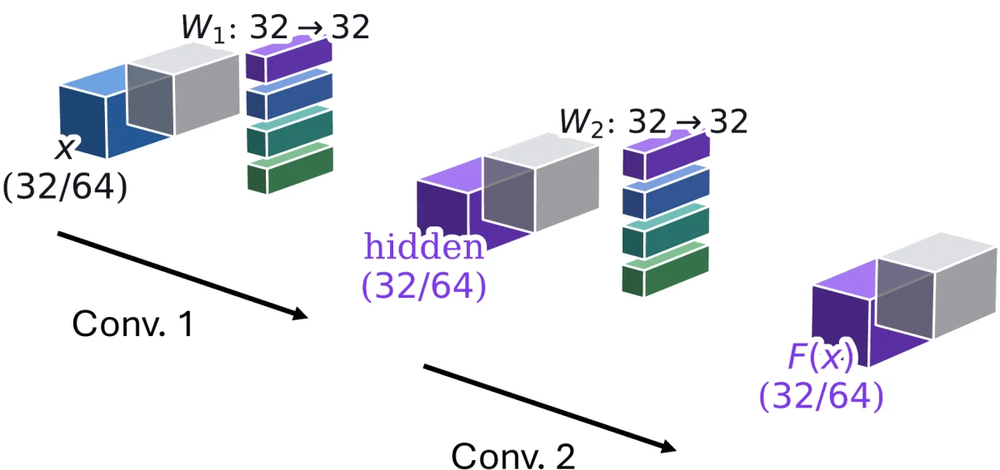
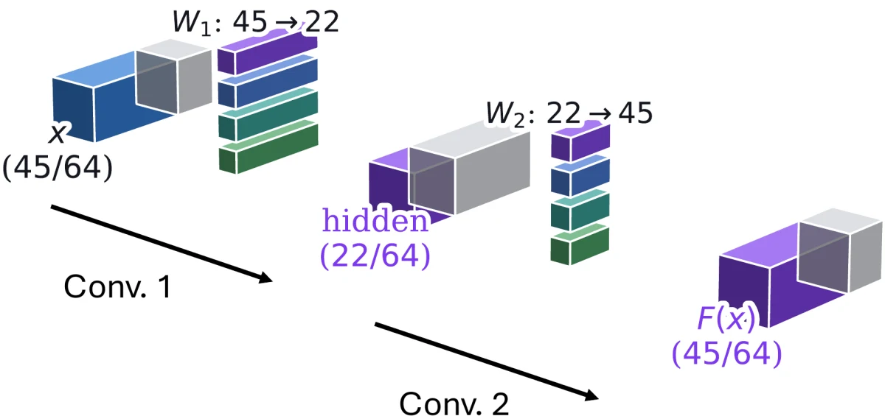
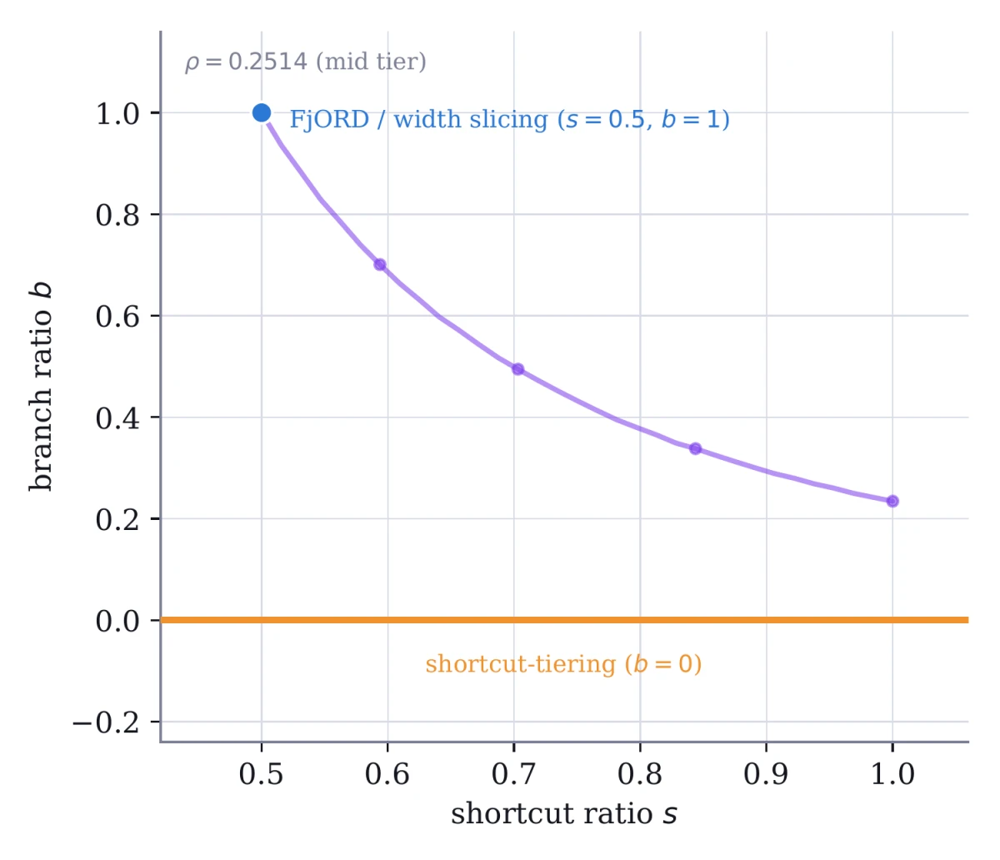
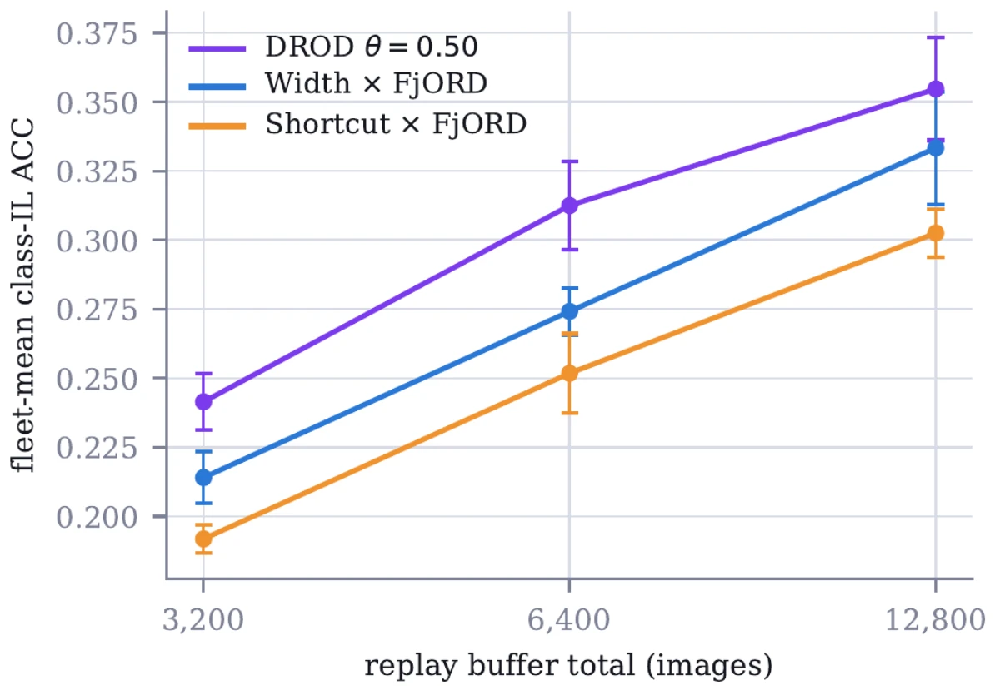

Federated Continual Learning · arXiv 2026
DROD: Dual-Ratio Ordered Dropout for Federated Continual Learning on Heterogeneous Devices
Middle East Technical University · Stanford University
Clients in a federation run models of different sizes, and every client's data keeps drifting to new classes. DROD gives each smaller client a sub-model cut along two independent ratios of each residual block instead of one width. At the same parameter and FLOP budget, it beats all 13 baseline configurations we compare, both in fleet mean and at every capacity tier. It stays ahead at every replay-buffer size and under every continual-learning method we test (ER, DER++, BiC and EWC), though under EWC all methods collapse alike.
Method: two ratios instead of one width
A residual block computes y = ReLU(x + F(x)). Width slicing, including FjORD's Ordered Dropout, narrows the carried stream x and the branch F together. DROD sets them apart: a shortcut ratio s sets the width of x, and a branch ratio b sets the hidden width of F as a fraction of it. The block's parameters and FLOPs scale as b·s², so one budget ρ is a whole curve b·s² = ρ, not a single point.



One knob along the budget curve: θ
Every point on b·s² = ρ costs the same, so we trace the curve with a single coordinate θ ∈ [0, 1]: s = ρ(1−θ)/2, b = ρθ. At θ = 0 the shortcut and branch shrink together, which is width slicing (FjORD). As θ grows, the shortcut widens and the branch absorbs more of the cut, until θ = 1 keeps the full shortcut.
θ = 0.5 splits the cut evenly between the two (s² = b = √ρ). Of the values we test (0.25, 0.5, 0.75, 1), it is the most accurate at every replay-buffer total and budget we swept them on, so it is the DROD reported throughout: 31.3% class-IL ACC against 27.2–28.1% for the other θ.

- Ordered Dropout on both ratiosAt every local step a client samples a nested (s, b) pair its capacity can afford, as FjORD does with its single width.
- No new server ruleEvery smaller sub-model is a prefix of a larger one along both ratios, so the server keeps FjORD's prefix-sliced averaging.
Results
Split-CIFAR-100, 10 tasks, class-incremental (one 100-way head, no task id). A ResNet-18 trained from scratch across 10 clients in three capacity tiers, all methods on one shared budget of 1.000 / 0.251 / 0.064 of the full model's FLOPs. Experience replay with 6,400 exemplars, mean ± sd over 3 seeds.
| Reduction × aggregation | Class-IL ACC ↑ | Forgetting ↓ | Task-IL ACC ↑ |
|---|---|---|---|
| DROD (θ = 0.5) | 31.3 ± 1.6 | 25.1 ± 1.9 | 69.7 ± 2.0 |
| Width × FjORD | 27.4 ± 0.8 | 26.3 ± 0.4 | 66.2 ± 1.1 |
| Shortcut × FjORD | 25.2 ± 1.4 | 29.1 ± 1.2 | 63.9 ± 1.0 |
| ScaleFL† | 21.5 ± 0.5 | 27.5 ± 0.7 | 58.2 ± 1.1 |
| Width × FedAvg | 19.3 ± 0.6 | 27.2 ± 0.2 | 55.2 ± 1.2 |
| Width × FIARSE | 19.1 ± 0.1 | 28.0 ± 0.2 | 55.2 ± 0.2 |
| Width × FedRolex | 17.4 ± 1.6 | 28.8 ± 0.9 | 52.0 ± 2.8 |
| Depth × FjORD | 16.5 ± 0.4 | 25.3 ± 0.2 | 50.5 ± 1.0 |
Fleet means over the three tiers, in %. Selected rows of the paper's Table 1 (17 arms). †ScaleFL uses its own width/depth split and is not budget-matched.
- Leads in every seedDROD beats each of the other 16 arms in all three seeds, not just on average.
- Every tier gainsEach of DROD's three tiers beats the matching tier of every baseline in every reported setting; the margin is usually widest at the smallest tier.
- Either budgetDROD's parameters and FLOPs both sit within 0.5% of each tier's target, so the parameter-matched grid gives the same lead.
The lead holds across continual-learning methods
DROD's novelty is on the federated side, so we check that it is not tied to one continual-learning method: the three leading geometries, each trained under four CL objectives on the same budget and the same 6,400-exemplar buffer.
| CL method | DROD (θ = 0.5) | Width × FjORD | Shortcut × FjORD | DROD lead |
|---|---|---|---|---|
| ER | 31.3 ± 1.6 | 27.4 ± 0.8 | 25.2 ± 1.4 | +3.8 |
| DER++ | 29.6 ± 0.1 | 27.5 ± 0.9 | 25.1 ± 1.0 | +2.1 |
| BiC | 23.1 ± 0.8 | 20.5 ± 1.2 | 20.0 ± 0.7 | +2.6 |
| EWC | 6.5 ± 0.1 | 6.1 ± 0.2 | 6.2 ± 0.1 | +0.2 |
Fleet-mean class-IL ACC (%), mean ± sd over 3 seeds; lead is over the next-best geometry. Under ER, DER++ and BiC the lead holds in every seed. Under EWC all three geometries collapse alike.
And across replay-buffer sizes
The buffer is the other resource a heterogeneous fleet has to divide. Sweeping its total from 3,200 to 12,800 exemplars, DROD stays above both baselines at every size, by 2.1 to 3.8 points over the best other geometry, including at the smallest buffer.

BibTeX
@misc{sezer2026droddualratioordereddropout,
title={DROD: Dual-Ratio Ordered Dropout for Federated Continual Learning on Heterogeneous Devices},
author={Berk Sezer and Özgür Soysal},
year={2026},
eprint={2610.25220},
archivePrefix={arXiv},
primaryClass={cs.LG},
url={https://arxiv.org/abs/2610.25220},
}